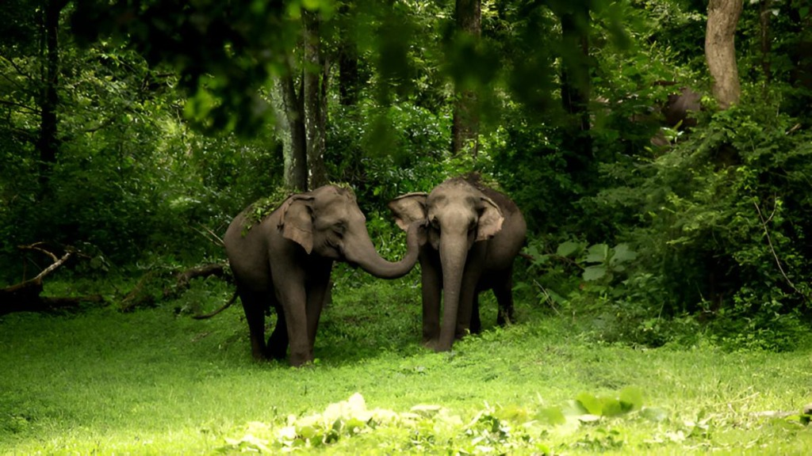

An intelligent conservation surveillance and early-warning platform. Combining boundary computer vision, behavioral animal trajectory tracking, verified community reporting, and safe evacuation vectoring to safeguard forest communities and endangered species.

Non-invasive sensory detection preserving natural migratory pathways without harmful physical barriers.
Human-wildlife conflict is an increasing challenge in forest-border regions, resulting in tragic loss of human life, extensive agricultural crop devastation, and retaliatory threats to endangered wildlife.
WildAI replaces hazardous electrical fences with an intelligent, multi-layered technological virtual barrier designed for coexistence:
Continuous automated boundary surveillance of wildlife and unauthorized human movement.
Evaluates movement trajectory, velocity, and gestures for accurate threat classification.
Participatory citizen science with AI deepfake detection and GPS verification.
One-touch SOS dispatches with safe-zone navigation avoiding predator locations.
Through the integration of cutting-edge technology and conservation science, we aim to create a harmonious coexistence between humans and wildlife while supporting effective wildlife management strategies.
Every module within WildAI is backed by genuine functional backend services, running real-time neural inference, spatial data routing, and forensic analysis.
Advanced AI algorithms continuously monitor boundary zones, detecting wildlife movement and unauthorized human intrusion with high confidence and minimal latency.
Behavioral pattern analysis evaluates movement speed, gestures, and acoustic signals to accurately identify species and assess danger levels.
Customized warning systems activate graduated alarm intensities and dispatches based on animal danger level — from high-risk apex predators to lower-risk herbivores.
Identifies unauthorized human entry and potential poaching activities along restricted boundary lines, alerting forest authorities with GPS coordinates and photographic evidence.
Mobile portal enables villagers to report sightings with automated image authenticity verification (deepfake, manipulation, duplicate, and EXIF consistency checks).
Instant emergency alert with dynamic turn-by-turn evacuation routes calculated in real time, vectoring residents away from active predator tracks to designated safe havens.
Report animal sightings directly from your mobile device, verify safe walking paths before travelling near forest borders, and activate Emergency SOS during dangerous encounters.
Configure IP webcam stream endpoint for boundary cameras